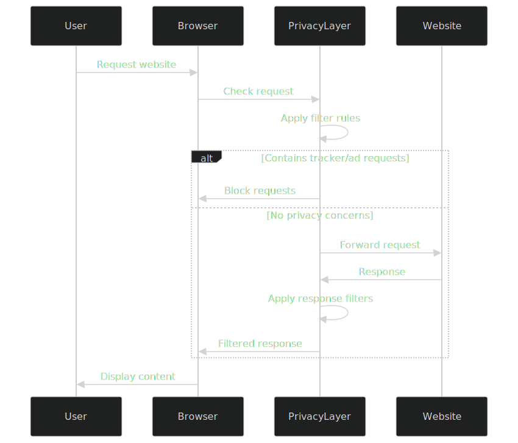

Privacy Layer
The Privacy Layer is a core component of Macro Browser that provides comprehensive protection against tracking, ads, and other privacy threats. It operates at multiple levels of the browser stack to ensure user privacy is maintained.
Architecture Overview

Key Components
Ad Blocker
The ad blocking system prevents advertisements from loading and displaying:
- Filter Lists: Uses multiple curated filter lists (EasyList, uBlock Origin lists, etc.)
- Network-Level Blocking: Prevents requests to ad-serving domains
- Cosmetic Filtering: Removes ad containers and placeholders from rendered pages
- Exception Handling: Support for user-defined exceptions and allowlists
- Performance Optimization: Fast matching algorithms for minimal browsing impact
Tracker Prevention
The tracker prevention system blocks tracking scripts and mechanisms:
- Known Tracker Blocking: Blocks known tracking domains and scripts
- Heuristic Detection: Identifies potential trackers based on behavior
- Cookie Management: Intelligent handling of tracking cookies
- Storage Partitioning: Isolates site data to prevent cross-site tracking
- Referrer Policy: Controls the HTTP Referer header to prevent information leakage
Fingerprinting Protection
Reduces the browser's fingerprinting surface to make users harder to identify:
- Canvas Fingerprinting Protection: Adds controlled noise to canvas operations
- Font Enumeration Control: Limits access to system font information
- User Agent Normalization: Provides standardized user agent information
- Hardware Information Protection: Limits access to device-specific information
- Time Precision Reduction: Reduces precision of timing APIs used for fingerprinting
Secure Connections
Ensures secure and encrypted connections to websites:
- HTTPS Upgrading: Automatically switches from HTTP to HTTPS where available
- HSTS Support: Honors HTTP Strict Transport Security headers
- Certificate Verification: Enhanced SSL/TLS certificate validation
- Mixed Content Blocking: Prevents loading insecure resources on secure pages
- Insecure Form Warning: Alerts users when entering data in non-secure forms
Private Browsing Mode
Ensures no browsing data is persisted between sessions:
- No History Retention: Browser does not save browsing history
- Session-Only Cookies: Cookies exist only during the browsing session
- In-Memory Cache: Cache data is stored in memory and cleared on exit
- No Storage Persistence: Web storage is not saved to disk
- Clean State: Every new browser session starts with a clean state
Technical Implementation
Ad Blocker Implementation
// Example of ad blocker integration
import { ElectronBlocker } from '@cliqz/adblocker-electron';
import fetch from 'cross-fetch';
async function initializeAdBlocker(session: Electron.Session) {
// Load filter lists
const blocker = await ElectronBlocker.fromLists(
fetch,
[
'https://easylist.to/easylist/easylist.txt',
'https://easylist.to/easylist/easyprivacy.txt',
'https://raw.githubusercontent.com/uBlockOrigin/uAssets/master/filters/filters.txt',
// Additional filter lists
],
{
enableCompression: true,
}
);
// Enable blocking
blocker.enableBlockingInSession(session);
// Add custom rules (optional)
blocker.addCosmeticFilters([
'example.com##.ad-container',
'example.org###sponsored-content',
]);
// Setup periodic updates
setInterval(() => {
blocker.update();
}, 24 * 60 * 60 * 1000); // Daily updates
return blocker;
}
Private Browsing Configuration
// Example of private browsing mode configuration
function configurePrivateBrowsing(session: Electron.Session) {
// Configure session to never persist data
const privateConfig = {
cache: false,
cookies: false,
storage: false,
localStorage: false,
indexedDB: false,
serviceWorkers: false,
webSQL: false,
permissions: false
};
// Apply configurations
session.setStorageAccessSync(privateConfig);
// Clear data when app closes
app.on('before-quit', () => {
session.clearStorageData();
session.clearCache();
session.clearHostResolverCache();
session.clearAuthCache();
});
// Initialize clean state on startup
app.on('ready', () => {
session.clearStorageData();
});
}
Secure Connections Enforcement
// Example of HTTPS upgrade implementation
function enforceSecureConnections(session: Electron.Session) {
// Upgrade HTTP requests to HTTPS where possible
session.webRequest.onBeforeRequest((details, callback) => {
if (details.url.startsWith('http:') && !isLocalhost(details.url)) {
const secureUrl = details.url.replace('http:', 'https:');
callback({ redirectURL: secureUrl });
} else {
callback({});
}
});
// Block mixed content
session.webRequest.onHeadersReceived((details, callback) => {
callback({
responseHeaders: {
...details.responseHeaders,
'Content-Security-Policy': ['upgrade-insecure-requests']
}
});
});
}
Privacy Dashboard
Macro Browser includes a privacy dashboard that provides users with information about blocked elements:
- Real-time Counter: Shows the number of blocked ads and trackers
- Site-specific Information: Details about privacy threats on the current site
- Global Statistics: Summary of protection across all browsing sessions
- Configuration Controls: User-friendly toggles for privacy features
Data Flow

Performance Considerations
The Privacy Layer is designed for minimal performance impact:
- Efficient Matching Algorithms: Fast rule matching with Bloom filters
- Caching Results: Caching filter decisions to avoid repeated processing
- Parallelized Processing: Handling filter checks in parallel where possible
- Selective Rule Application: Applying only relevant rules to each request
- Resource Prioritization: Prioritizing user-visible content over background requests
Future Enhancements
Planned improvements to the Privacy Layer:
- Advanced Fingerprinting Protection: More sophisticated anti-fingerprinting measures
- Machine Learning Detection: ML-based identification of new trackers
- Enhanced First-Party Isolation: Stronger isolation between websites
- More Granular Controls: Additional user controls for specific privacy features